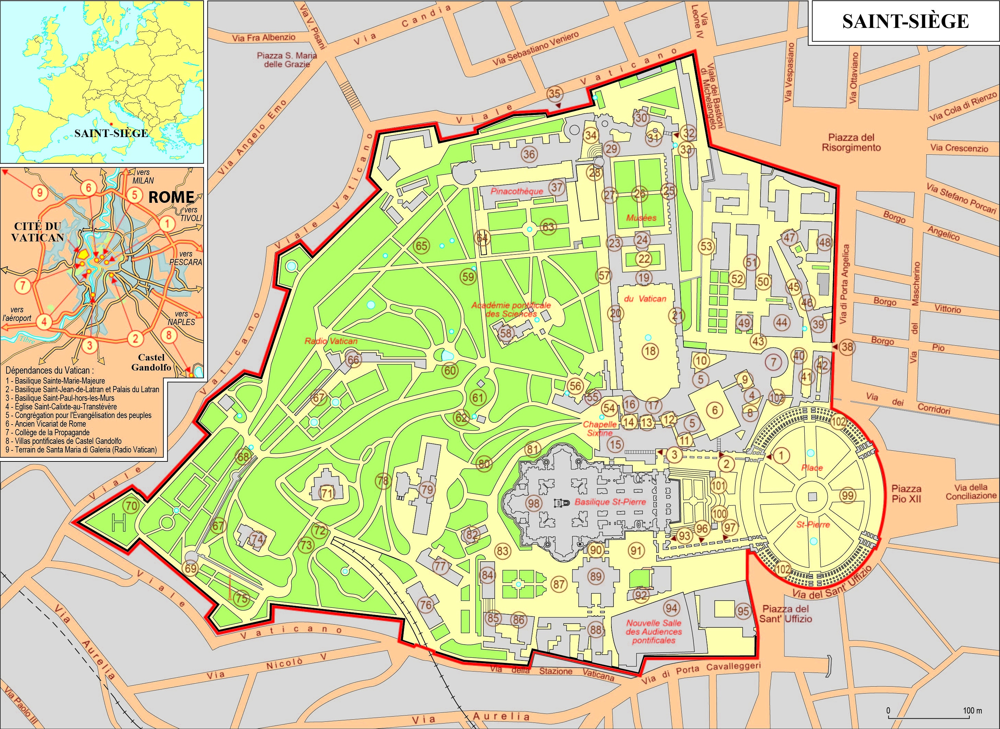

Qu’est-ce que le Vatican ?
Le Vatican, (ou Saint-Siège), est un État indépendant situé au cœur de Rome (Italie). Il a pour capitale
la Cité du Vatican, Il constitue le siège de l’autorité suprême de l’Église catholique. Fondé en 1929
par les accords du Latran, il couvre 0,44 km² et compte environ 800 habitants (1818 habitants par km2).
Le pape y exerce à la fois un pouvoir spirituel et temporel. L’État abrite des lieux religieux et
culturels majeurs tels que la basilique Saint-Pierre, les musées du Vatican et la chapelle Sixtine.
Actuellement, le chef d’état est le pape Léon XIV
Le Vatican ne dispose pas de ses propres frontières : on y parvient généralement depuis Rome, en passant par la place Saint-Pierre
